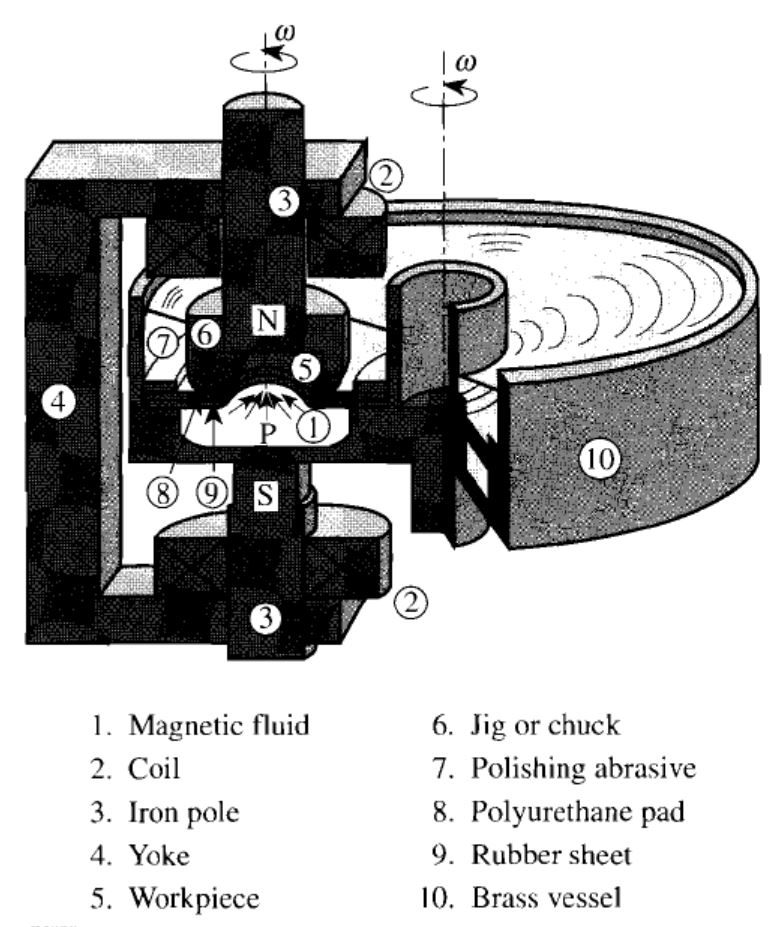
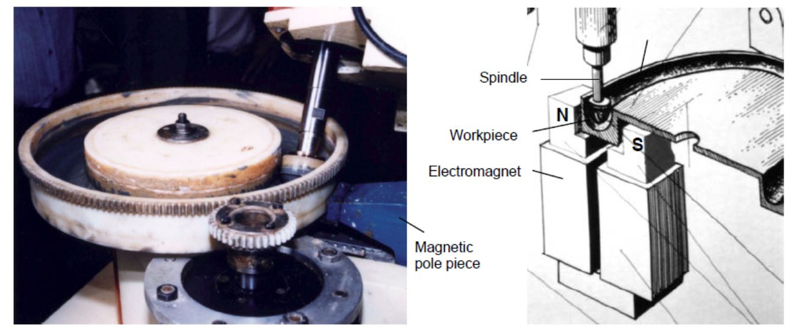
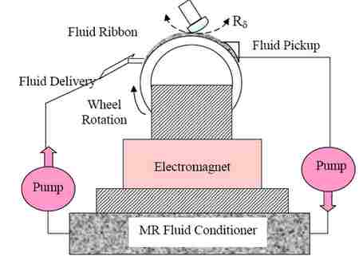

Ref : https://ko.wikipedia.org/wiki/%EC%9E%90%EA%B8%B0%EC%9C%A0%EB%8F%99%EC%9C%A0%EC%B2%B4_%EC%97%B0%EB%A7%88
http://www.newyorkphotonics.org/newsletter/Library/Harris%20MRF%20QED%20History%20SPIE%202011.pdf
http://uran.donetsk.ua/~masters/2010/fimm/kondratenko/library/article9.htm
https://en.wikipedia.org/wiki/Magnetorheological_finishing
자기유동유체 연마(Magnetorheological finishing)는 정밀하게 표면을 처리하는 연마 기술이다.
전통적인 연마방식과 달리 자기장을 이용하여 연마제의 거동을 조절할 수 있으며 실시간 컴퓨터계산을 통해서 연마가 가능하다. 전통적인 연마방식과 달리 표면 전체 (full aperture)를 연마하는 것이 아니라 부분적인 연마 (sub-aperture)로 회전모드 (rotational)나 수평이동모드 (raster)가 가능하여 구면, 비구면, 사각, 반구형태등 및 자유곡면에 대한 연마가 가능하다. 광학체의 최종표면의 형태를 컴퓨터 알고리즘을 사용하여 예측하고 연마할 수 있다.
Unlike conventional rigid lap polishing, the MR fluid's shape and stiffness can be magnetically manipulated and controlled in real time. The optic's final surface form and finishing results are predicted through the use of computer algorithms.
